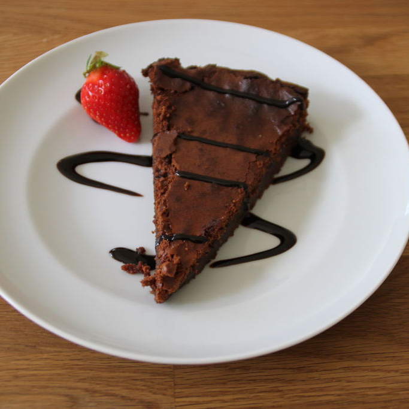

Double Chocolate Cheesecake
Ingredients
- 24 Hershey's Kisses Brand Special Dark Mildly Sweet Chocolate
- 3 packages (8 oz. each) cream cheese, softened
- 1-1/4 cups sugar
- 1/3 cup Hershey's Cocoa
- 3 eggs
- 1-1/2 teaspoons vanilla extract
- Chocolate crumb crust
- Whipped topping or whipped cream (optional)
Cooking Instructions
- Prepare chocolate crumb crust. Heat oven to 350°F.
- Beat cream cheese and sugar in large bowl until smooth. Beat in cocoa. Add eggs, one at a time, beating well after each addition. Stir in vanilla. Place 1/2 cup batter in separate bowl; pour remaining batter into prepared crust.
- Remove wrappers from 12 chocolates; place in medium microwave-safe bowl. Microwave at MEDIUM (50%) 1 minute; stir. If necessary, microwave at MEDIUM an additional 15 seconds at a time, stirring after each heating, until chocolates are melted and smooth when stirred. Gradually blend melted chocolate into reserved batter. Drop by teaspoons onto batter in pan; swirl with knife or spatula for marbled effect.
- Bake 45 to 50 minutes or until almost set. Remove from oven to wire rack. With knife, loosen cheesecake from side of pan. Cool completely; remove side of pan. Cover; refrigerate several hours. Garnish with whipped topping and remaining chocolates. Cover; refrigerate leftovers. 10 to 12 servings.
Photo Courtesy of fabiothedrummer on instructables.com